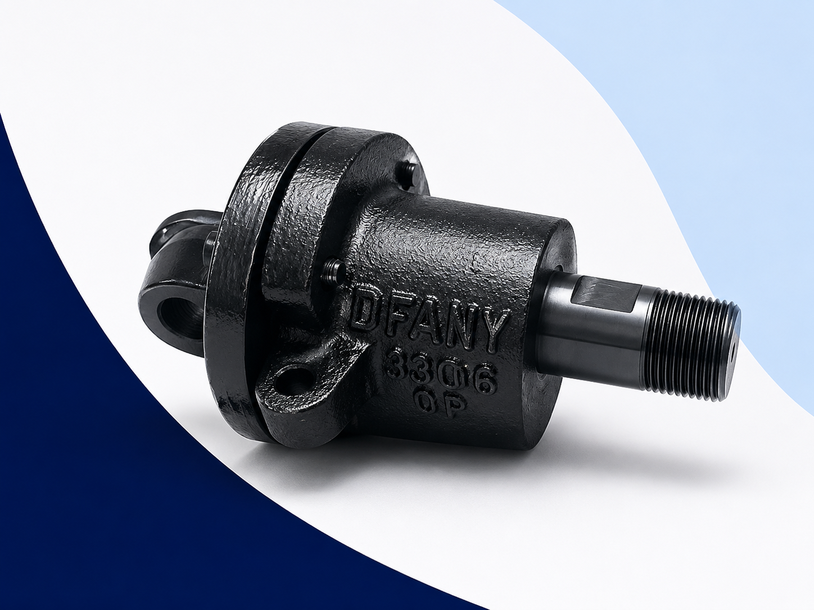
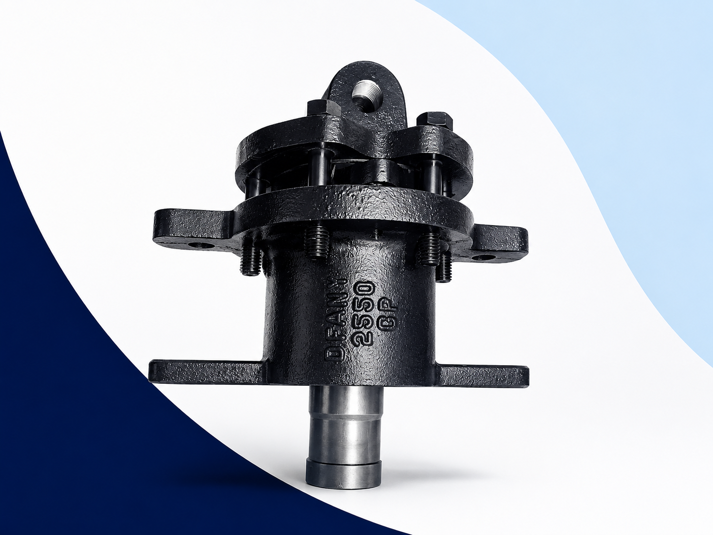
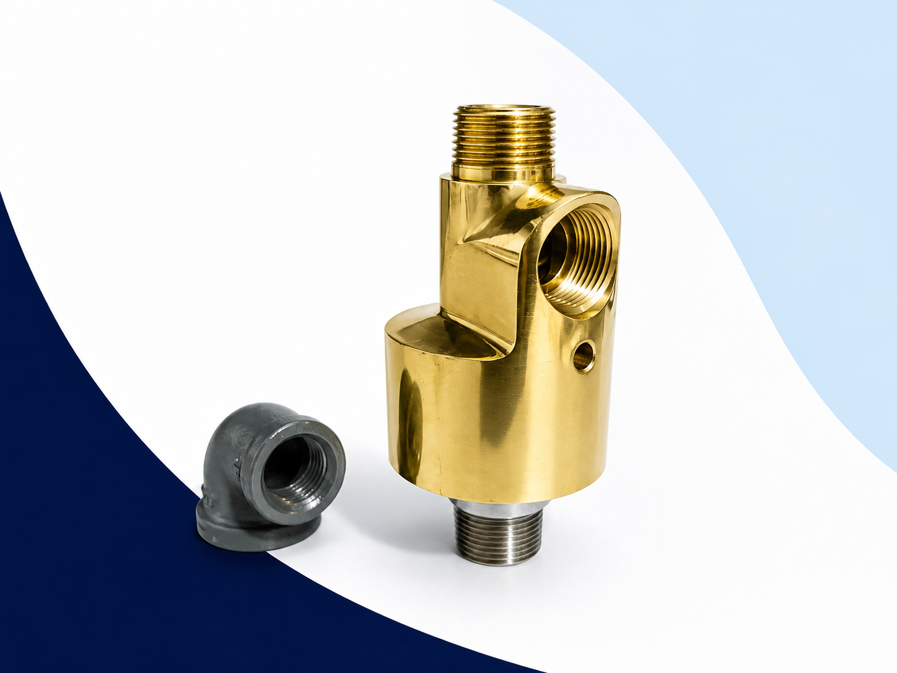
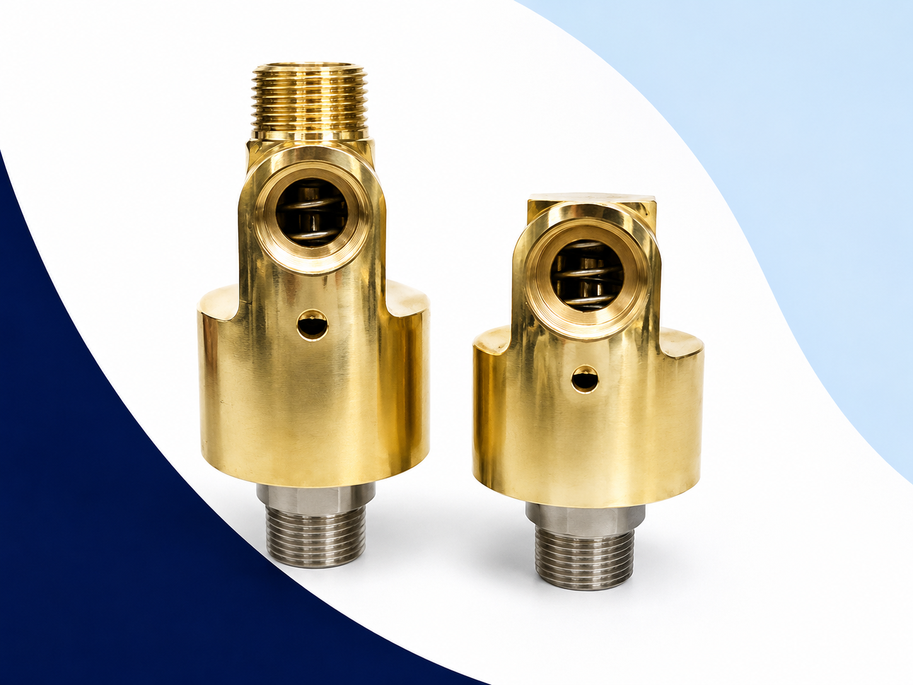
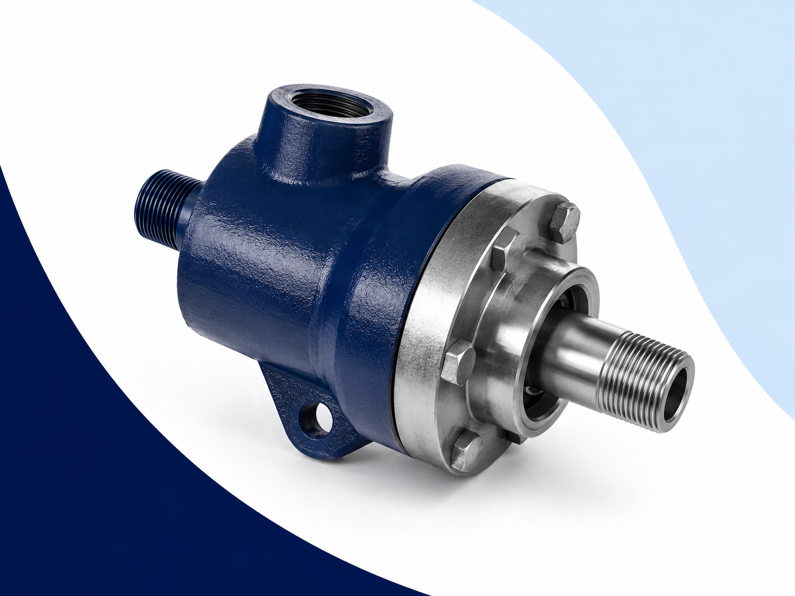

Juntas Rotativas
Fabricación y suministro para vapor, agua y aceite térmico
Juntas Rotativas
Fabricadas por Defany Industrial
En Defany Industrial fabricamos y suministramos juntas rotativas para transferencia eficiente de vapor, agua, condensado, aire y aceite térmico en cilindros, rodillos, tambores y equipos rotativos industriales.
Nuestras juntas están diseñadas para ofrecer sellado confiable, larga vida útil y compatibilidad con aplicaciones en industria papelera, cartonera, textil, plásticos, alimentos y procesos térmicos.

¿Qué es una Junta Rotativa?
Una junta rotativa es un dispositivo mecánico diseñado para transferir fluidos desde una tubería fija hacia un elemento en rotación, manteniendo un sellado seguro durante la operación.
Se utiliza en equipos que requieren transferencia continua de vapor, agua, condensado, aire o aceite térmico hacia cilindros, rodillos, tambores o ejes rotativos.
Fluidos que maneja:
Líneas principales de fabricación
Nuestra especialidad se concentra en la fabricación nacional de juntas rotativas Serie 3000 Tipo SB y Serie 2000 Tipo LJ, con disponibilidad de refacciones, reemplazo por muestra y configuración según condiciones de operación.

Serie 3000 Tipo SB
La línea más vendida para vapor y condensado
Las juntas rotativas Tipo SB son equipos de doble flujo diseñados para aplicaciones donde se requiere alimentación y retorno dentro del mismo conjunto. Son ideales para cilindros secadores, rodillos calentados, corrugadoras, maquinaria papelera, industria cartonera y equipos textiles.
Configuraciones disponibles
Modelos Serie 3000
| Modelo | Medida |
|---|---|
| 2100 | ½" |
| 3200 | ¾" |
| 3300 | 1" |
| 3400 | 1¼" |
| 3500 | 1½" |
| 3550 | 2" |
| 3600 | 2½" |
| 3700 | 3" |
Beneficios
- Doble flujo
- Extracción eficiente de condensado
- Compatibilidad con sifón estacionario
- Diseño robusto para trabajo continuo
- Refacciones disponibles
- Fabricación nacional
- Reemplazo por muestra o medidas
Serie 2000 Tipo LJ
Alto desempeño para aplicaciones de vapor
La Serie LJ es una línea de juntas rotativas diseñada para aplicaciones de vapor que requieren estabilidad mecánica, operación confiable y compatibilidad con sistemas de sifón estacionario.
Su diseño es adecuado para procesos industriales exigentes donde se requiere transferencia continua de vapor en equipos rotativos.
Modelos Serie 2000
| Modelo | Medida |
|---|---|
| 2400 | 1¼" |
| 2500 | 1½" |
| 2550 | 2" |
| 2600 | 2½" |
| 2700 | 3" |
Ventajas
- Excelente desempeño en vapor
- Diseño industrial robusto
- Compatible con sifón estacionario
- Fácil mantenimiento
- Fabricación bajo especificación
- Reemplazo por equivalencia dimensional
- Refacciones disponibles

Líneas complementarias De-Wit
Además de nuestras líneas de fabricación propia, suministramos juntas rotativas De-Wit para aplicaciones específicas de flujo sencillo, doble flujo, agua, aire y aceite térmico.

Flujo sencillo
Para agua, aire, agua salada y aplicaciones de baja temperatura.

Doble flujo
Para aplicaciones industriales que requieren alimentación y retorno mediante sistemas de sifón.

Aceite térmico
Para aceite térmico, agua caliente, vapor saturado y procesos de calentamiento industrial.
Aplicaciones Industriales
Nuestras juntas rotativas son utilizadas en equipos donde se requiere transferencia continua de fluido hacia elementos rotativos, especialmente en procesos con vapor, condensado, agua caliente y aceite térmico.
Cómo seleccionar la Junta Rotativa correcta
Para seleccionar correctamente una junta rotativa es necesario conocer las condiciones reales de operación del equipo. Esto permite definir el tipo de flujo, material, conexión, tamaño y configuración adecuada.
Usar configuradorDatos necesarios para cotizar:
- Fluido de trabajo
- Presión de operación
- Temperatura
- Velocidad de giro (RPM)
- Tipo de flujo
- Tipo de sifón
- Medida de conexión
- Cuerda RH, LH o conexión rápida tipo Q
- Modelo actual (si se conoce)
- Fotografías o muestra física
Configure su Junta Rotativa
Complete los datos básicos y genere una descripción para enviarla al formulario de contacto.
Descripción generada:
Su solicitud se agregó al mensaje de contacto. Podrá encontrarla en el formulario de la página de contacto.
Ir a contactoFabricación por muestra o medidas
Si no conoce el modelo instalado, podemos apoyar en la identificación o fabricación de una junta compatible mediante fotografías, medidas, plano o muestra física.
ContactarDatos útiles para identificación:
- Foto frontal
- Foto lateral
- Medida de conexión
- Largo total
- Tipo de cuerda
- Medida del sifón
- Condiciones de operación
Refacciones y mantenimiento
Contamos con refacciones y componentes para mantenimiento preventivo y correctivo de juntas rotativas industriales.
Preguntas frecuentes
Sí. Fabricamos principalmente las Series Tipo SB y Tipo LJ para aplicaciones industriales de vapor y condensado.
Sí. Podemos fabricar o suministrar reemplazos compatibles utilizando medidas, fotografías o muestra física del equipo en operación.
Vapor, agua, condensado, aire y aceite térmico, dependiendo del modelo y configuración seleccionada.
Fluido, presión, temperatura, RPM, medida de conexión, tipo de flujo, tipo de cuerda (RH/LH/Q), fotografías y dimensiones principales. También puede usar nuestro configurador para generar una descripción previa.
Sí. Contamos con sellos, empaques, O-rings, resortes, rodamientos, componentes internos y refacciones bajo muestra para nuestras líneas de fabricación.
¿Necesita cotizar una junta rotativa?
Envíenos las condiciones de operación o utilice el configurador para generar una descripción preliminar. Nuestro equipo técnico le ayudará a seleccionar o fabricar la opción correcta.